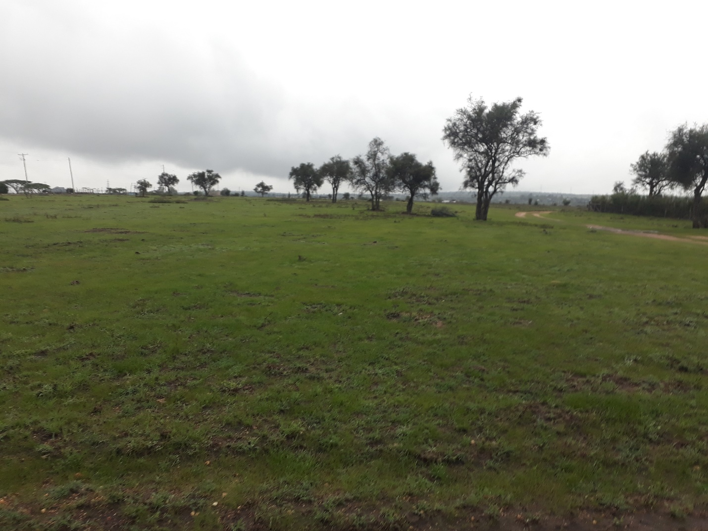

THE IMPACT OF ERRATIC RAINFALL ON FOOD SECURITY
In recent years, Kajiado has experienced increasingly unpredictable weather patterns, with prolonged droughts and unseasonal downpours becoming the norm. These erratic conditions have made it nearly impossible for local farmers to plan and sustain their crops, leading to repeated crop failures and dwindling food supplies. For a community that relies heavily on livestock and subsistence farming, these challenges have dire consequences.
The food security situation in Kajiado has reached a critical point. The county’s residents, who once enjoyed relative food stability, are now facing frequent shortages. Families are being forced to rely on emergency food aid, and the nutritional status of children and vulnerable populations is deteriorating. This crisis is compounded by the fact that Kajiado's economy is heavily dependent on agriculture, making the stability of food production crucial to the region’s overall well-being.
Climate-Smart Agriculture: A Path Forward
In response to these challenges, there is a growing recognition of the need for climate-smart agriculture (CSA) techniques that can help farmers adapt to changing conditions. CSA involves a combination of practices that enhance productivity, increase resilience to climate impacts, and reduce greenhouse gas emissions. For Kajiado, where water scarcity is a major issue, techniques such as rainwater harvesting, drip irrigation, and the use of drought-resistant crops are being promoted as essential tools for securing the future of agriculture in the region.
The adoption of climate-smart practices not only addresses immediate food security concerns but also helps build long-term resilience against the impacts of climate change. These practices enable farmers to optimize the use of available resources, such as water and soil nutrients, thereby improving yields even in adverse conditions.
Empowering Youth Through Farming
One of the key strategies for addressing food security in Kajiado is engaging the indigenous youth in agriculture. Traditionally, the Maasai youth have been more involved in herding livestock, but with the challenges posed by climate change, there is an urgent need for diversification. Farming presents a promising alternative that can provide a stable source of income and improve food security at the household level.
Programs aimed at training young people in modern farming techniques are gaining momentum in Kajiado. These initiatives not only teach the technical skills needed to succeed in agriculture but also instill a sense of entrepreneurship, encouraging youth to view farming as a viable and profitable career. By empowering the youth to take up farming, Kajiado can diversify its economy, reduce dependency on livestock, and build a more resilient community.
Furthermore, youth-led farming projects are vital for ensuring the sustainability of the region’s food systems. With the integration of climate-smart practices, these projects can become models of success, demonstrating how agriculture can thrive even in the face of climate challenges. Encouragingly, there is a growing interest among the youth in agribusiness, driven by the realization that farming can offer both economic opportunities and a way to contribute to the community’s food security.